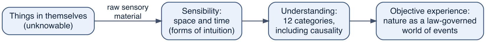
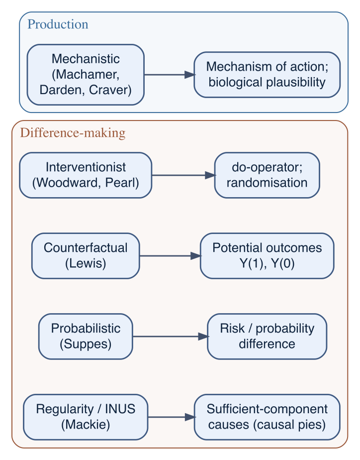

5 Theories of causation: the counterfactual among rivals
The previous chapter, Chapter 4, left the philosophy of causation with Hume’s problem and a short sketch of Kant’s answer; the first section below fills that sketch in. Hume had argued that no necessary connection between cause and effect can be found in the objects or read off the data: what observation delivers is regular succession, and the step from succession to causation is supplied by the mind, not by the world. Kant accepted the negative half of this and tried to secure the positive half by making causation a fixed precondition of experience; the collapse of his Newtonian guarantee showed the cost of treating that framework as certain.
This chapter continues the story into the twentieth century and up to present practice. The reason for doing so is not antiquarian. The formal apparatus this book uses for causal questions — the potential-outcomes framework of Chapter 11 and the causal diagrams of Chapter 12 — descends from one philosophical account of causation, the counterfactual account. It is easy for a student to absorb that apparatus and come to believe it is what causation is. It is not. It is one operational device, built on one of several competing theories, each of which captures something real that the others miss. The aim here is to set the counterfactual account beside its rivals, so that the framework of Part III is seen for what it is: a deliberate, restricted choice, well suited to the questions epidemiology can answer by intervention, and silent about much else.
A second thread runs through the chapter. Each theory stands in a definite relation to the controlled, randomised experiment — the ideal introduced in Chapter 4. Randomisation means something slightly different under each account of what a cause is, and seeing those differences is the quickest way to understand both the theories and the experiment. A consolidating table (Table 5.2) collects the comparison.
5.1 Kant’s answer to Hume
Hume’s challenge received its first systematic answer from Kant. The answer matters here for two reasons: it is the historical origin of the idea that causal structure is supplied rather than observed, which is also the modern position, and its failure shows what goes wrong when the supplied structure is treated as certain rather than as an assumption.
Immanuel Kant (1724–1804)
A Prussian philosopher who spent his entire life in and around Königsberg (now Kaliningrad, Russia), where he was professor of logic and metaphysics. Before turning to philosophy proper he worked on natural science: his 1755 cosmology proposed that the solar system condensed from a rotating cloud of matter (the nebular hypothesis), and Newtonian physics remained for him the model of what secure knowledge of nature looks like. His central work is the Critique of Pure Reason (1781, substantially revised 1787), which asks what the mind itself contributes to knowledge. Kant credited Hume with provoking the project: the recollection of Hume, he wrote, was what “first interrupted my dogmatic slumber” (Prolegomena to Any Future Metaphysics, 1783).
Kant accepted Hume’s negative result as far as it goes. If all our knowledge of the world came from sense data alone, then Hume’s sceptical conclusion would stand: no amount of observation can deliver necessity. Kant’s response was to deny the premise. Some knowledge, he argued, comes not from the sense data but from the structure of the mind that receives them — and that structure can be known in advance of any particular experience.
5.1.1 Analytic and synthetic, a priori and a posteriori
To state his claim precisely, Kant introduced two distinctions between kinds of judgment.
- A judgment is a priori if it can be known independently of experience, and a posteriori if knowing it requires experience.
- A judgment is analytic if the predicate is already contained in the concept of the subject: “all bachelors are unmarried” is true by the meaning of the word bachelor, and denying it is self-contradictory. A judgment is synthetic if the predicate adds something not contained in the subject: “this bachelor smokes” reports a fact about the world, not about the meanings of words.
Crossing the two distinctions gives four cells (Table 5.1):
| Analytic | Synthetic | |
|---|---|---|
| A priori | “All bachelors are unmarried” — true by meaning; the territory of classical logic (Chapter 3) | “7 + 5 = 12”; “every event has a cause” — Kant’s battleground |
| A posteriori | (empty — if a judgment is true by meaning, no experience is needed) | “Smoking increases the risk of lung cancer” — ordinary empirical knowledge |
Three of the cells are unproblematic. Analytic a priori judgments are certain but uninformative: they unpack meanings without saying anything new about the world. Synthetic a posteriori judgments are the ordinary business of empirical science, and they inherit all of Hume’s problems. The interesting cell is the synthetic a priori: judgments that genuinely say something about the world, yet can be known with necessity, in advance of experience. Kant claimed this cell is occupied. His examples: arithmetic (“7 + 5 = 12” — the concept 12, he argued, is not contained in the concepts 7, 5, and addition); geometry (“the straight line between two points is the shortest”); the causal principle itself (“every alteration must have a cause”); and the fundamental principles of Newtonian physics — in the Critique he cites the conservation of the quantity of matter and the equality of action and reaction as examples. The central question of the Critique of Pure Reason is then: how are synthetic a priori judgments possible?
5.1.2 The answer: the mind supplies the form of experience
Kant’s answer is a model of cognition. Real-world things-in-themselves (strictly unknowable) affect our senses and produce raw sensory material. Before that material can become experience, the mind processes it through two layers.
The first layer is sensibility, whose forms are space and time. For Kant, space and time are not features of things-in-themselves, and not concepts abstracted from experience; they are forms of intuition — the mind’s own ordering framework, into which all sensory material must be fitted before it can be perceived at all. Whatever we experience, we necessarily experience as spatially and temporally ordered, because that ordering is what our receptive faculty does. This, for Kant, is why geometry is synthetic a priori: Euclidean geometry describes the form of space, and since space is the mind’s contribution, no possible experience could ever violate it.
The second layer is the understanding, which organises the spatially and temporally ordered material under twelve a priori categories, the “pure concepts of the understanding.” Kant arranges them in four groups of three:
Quantity — Unity, Plurality, Totality
Quality — Reality, Negation, Limitation
Relation — Substance and accident (inherence/subsistence), Causality and dependence (cause and effect), Community a.k.a. Interaction.1
Modality — Possibility/impossibility, Existence/non-existence, Necessity/contingency.
Causality is on the list. It is not read off the world; it is one of the rules by which the mind turns a mere sequence of sensations into an objective, law-governed world of events. So the necessity Hume could not find in the objects becomes a condition the mind imposes as a precondition of any objective experience. That is why “every event has a cause” is, for Kant, necessarily true of everything we can ever experience — and why it says nothing at all about things-in-themselves.
5.1.3 Newtonian physics as exactly true
For Kant this construction was not an abstract exercise; its payoff was a guarantee for the best science of his day. He took Euclidean geometry and the core of Newtonian physics to be bodies of synthetic a priori knowledge: not extremely well-confirmed hypotheses, but propositions exactly true (holding without approximation) and necessarily true (holding for any possible experience), certified in advance because they articulate the very framework the mind uses to construct the empirical world. In the Metaphysical Foundations of Natural Science (1786) he attempted to derive the fundamental laws of Newtonian mechanics — a law of inertia, the equality of action and reaction, the conservation of the quantity of matter — from the categories applied to the concept of matter in motion. Where Hume had left induction without rational support, Kant appeared to have secured physics against any conceivable revision.
The subsequent history is instructive. In the nineteenth century Lobachevsky, Bolyai, and Riemann constructed consistent non-Euclidean geometries, showing that Euclid’s is not the only thinkable structure for space; which geometry physical space has thereby became an empirical question. In 1915 Einstein’s general theory of relativity answered it: the geometry of spacetime is non-Euclidean, depends on the distribution of matter, and Newtonian mechanics is an approximation, accurate at low velocities and in weak gravitational fields. The propositions Kant had certified as necessarily true of all possible experience turned out to be false of actual experience. One influential response (Reichenbach’s relativised a priori) kept Kant’s insight that every physical theory rests on framework assumptions that are not tested by data in the ordinary way, while giving up the claim that those assumptions are fixed and necessary: they are constitutive of a given theory, and they get revised when the theory is replaced.
Criticism of Kant’s synthetic a priori
Kant claimed that there is a special kind of knowledge: statements that are informative about the world (synthetic) yet knowable without experience (a priori). His prime examples were mathematics (“7 + 5 = 12”), geometry (space is Euclidean), and basic physics (every event has a cause). This idea is the foundation of his whole philosophy — and it has been attacked from several directions.
Science undermined his examples. Kant treated Euclidean geometry and Newtonian causality as necessary truths built into how any mind must experience the world. But in the 19th century, mathematicians developed consistent non-Euclidean geometries, and Einstein’s general relativity later showed that physical space is actually not Euclidean. Quantum mechanics similarly challenged strict causality. If our supposedly unshakeable a priori knowledge turned out to be wrong, it was never a priori knowledge at all — just a very entrenched assumption.
The empiricist attack: the category is empty. Logical positivists like A. J. Ayer and the Vienna Circle argued in the early 20th century that all meaningful statements are either analytic (true by definition, like “all bachelors are unmarried”) or synthetic and known through experience. On this view, mathematics is really analytic — it follows from definitions and logical rules and tells us nothing about the world itself. So the “synthetic a priori” is a confusion: Kant mistook complicated definitional truths for substantive knowledge.
Quine: the whole distinction collapses. W. V. O. Quine went further in “Two Dogmas of Empiricism” (1951), arguing that the analytic/synthetic distinction itself cannot be drawn sharply. Every attempt to define “analytic” ends up circular. And if there is no clean line between the two, Kant’s question — “how are synthetic a priori judgments possible?” — is badly posed. For Quine, no belief is immune to revision by experience, not even logic or math; some beliefs are just harder to give up than others.
The psychology objection. Kant argued that space, time, and causality are structures the mind imposes on experience. But how could he possibly know this? He cannot step outside human cognition to check. His claims about the mind’s necessary structure look like empirical psychology dressed up as certainty.
The “neglected alternative.” A classic objection (raised by Trendelenburg) points out a gap in Kant’s argument: even if space and time are forms our mind imposes, that doesn’t rule out that things in themselves are also spatial and temporal. Kant never justified excluding this possibility.
Where things stand. Few philosophers today accept Kant’s specific examples of synthetic a priori knowledge. However, the underlying idea — that the mind actively structures experience rather than passively recording it — remains enormously influential in philosophy and cognitive science. And some philosophers (notably Saul Kripke) later argued for related categories like “necessary a posteriori” truths, showing that Kant’s way of carving up knowledge, though flawed, opened questions that are still alive.
5.2 Two families of theory
Modern accounts of causation divide, roughly, into two families.2 Difference-making accounts say that a cause is something that makes a difference to its effect: had the cause been absent, or been set to some other value, the effect would have been different, or would have been less probable, or would have responded to an intervention. Production accounts say that a cause is something that brings its effect about — that there is a physical process or mechanism connecting the two, along which influence is propagated. The difference-making family contains the regularity, probabilistic, counterfactual and interventionist theories examined below; the production family contains the mechanistic and physical-process theories.
The distinction matters for epidemiology because its two main forms of evidence line up with the two families. A randomised trial establishes that an exposure makes a difference to an outcome, while saying nothing about how; laboratory and physiological work establishes a mechanism, while saying little about its net effect in a population. Neither kind of evidence is the whole of causation, and the closing sections return to how they combine.
We take the theories in the order in which they sharpen the point.
5.3 Russell: causation as a relic
Bertrand Russell (1872–1970)
A British philosopher, logician and mathematician, and one of the founders of analytic philosophy. With Alfred North Whitehead he wrote Principia Mathematica (1910–1913), an attempt to derive mathematics from logic. He wrote across an enormous range — logic, epistemology, the philosophy of science, ethics, politics — and was awarded the Nobel Prize in Literature in 1950. He is relevant here for a single, deliberately provocative paper.
In “On the Notion of Cause” (1913), Russell argued that mature physics contains no causes at all.3 The fundamental laws of physics are differential equations relating the state of a system at one time to its state at neighbouring times. These equations are symmetric: they let you compute the past from the present as readily as the future from the present, and they mention no privileged “cause” and no “effect”, only functional dependence among quantities. The everyday notion of one event producing another — asymmetric, and tied to a particular pair of events — appears nowhere in the equations. Russell concluded, famously, that the “law of causality” is “a relic of a bygone age, surviving, like the monarchy, only because it is erroneously supposed to do no harm.”
Russell overstated the case, and later physics of irreversible processes reintroduced asymmetries he ignored. But the paper makes a point that survives, and that every epidemiologist should hold onto. At the level of fundamental law there may be nothing that answers to “A causes B”; and yet the special sciences — epidemiology, medicine, economics — cannot take a step without such talk, because they are in the business of choosing actions. “Cause” is not a concept we need in order to state the deepest laws of nature; it is a concept we need in order to decide what to do. This orientation towards action, rather than towards fundamental metaphysics, is exactly the stance the rest of this book takes. It is the first statement of the metaphysical firewall named in Chapter 1 and motivated in Chapter 4: the causal vocabulary of epidemiology is a tool for a decision-oriented science, not a theory of the physical or biological connection itself.
5.4 Regularity and INUS conditions: the sufficient-component-cause model
The most direct descendant of Hume is the regularity theory: to say that C causes E is to say that events of type C are regularly followed by events of type E. The bare version fails immediately — day regularly follows night without causing it — but a refined version, due to Mackie, is the one epidemiology actually uses.
Mackie observed that a cause is rarely sufficient on its own and rarely strictly necessary.4 A short circuit causes a house fire, but only together with the presence of oxygen, flammable material, and the absence of a working sprinkler; and the same fire could have been started another way. He captured this with the INUS condition: a cause is an Insufficient but Non-redundant part of an Unnecessary but Sufficient condition. The short circuit is insufficient by itself; it is a non-redundant part of a bundle (short circuit + oxygen + fuel + no sprinkler) that is jointly sufficient for the fire; and that bundle is not the only one that would do, so it is unnecessary.
This is, in all but name, the sufficient-component-cause model that Rothman introduced to epidemiology — the “causal pies”.5 Each completed pie is a minimal set of conditions jointly sufficient to produce the disease; each slice is a component cause, an INUS condition. The model captures three things cleanly:
- Multicausality. A disease can be produced by several distinct sufficient sets, and a given component (smoking, say) may appear in some pies and not others.
- Interaction. Two components in the same pie act together: neither completes the pie alone, so their joint effect is not the sum of their separate effects. This is the mechanistic root of the interaction discussed in Chapter 17.
- Prevention. Removing any single component from an otherwise-completed pie prevents that instance of the disease, even if the component appears in only a minority of cases.
What the model does not provide is a way to get from these type-level structures to a number estimated from data. The pies describe how disease could be produced; they do not tell you the average effect of intervening on one component in a real population, nor how to identify that effect when exposure is not randomised. For that, epidemiology needs a difference-making account tied to intervention — which is where the remaining theories come in.
An ancient precedent: the Stoic theory of causes
Mackie’s analysis has an ancient precedent. The Stoics saw causation differently from Aristotle.6 They disregarded material, formal and final causes, but distinguished several kinds of efficient cause. They also offered a universal law of causation: A causes that B is F, where A and B are bodies and F is an abstract, non-bodily entity, a lekton — for example A a scalpel, B flesh, F the predicate “being cut”. A is the active element and B the passive one (also called matter). Their taxonomy of efficient causes is a taxonomy of INUS conditions before the fact:
- Joint causes (sunaitia): two oxen in front of a cart, when neither alone can move it — components of one sufficient set.
- Auxiliary causes (sunerga): the second ox when either can move the cart alone — a redundant component.
- Sustaining causes (aitiai sunektikai) hold things together in time: the body is held together by an active fluid, pneuma (breath), and a person is kept alive by their soul, the sustaining cause; when it ceases, the body decomposes.
- Antecedent causes (prokatarktikai) retain their effects after ceasing to operate, like a house that remains after the builders leave; an antecedent cause leaves in the matter something that is itself a sustaining cause, which is how its effects linger. When a patient catches a cold, the coldness of the air is the antecedent cause and the subsequent fever the sustaining cause of the symptoms.
Causes, for the Stoics, form a network, not always a chain. They also accepted a strong causal determinism: everything is caused by something, and every effect is fully determined by its causes, so that nothing happens without a cause and every cause necessitates its effect. This unified series of causes and effects is the doctrine of fate, which raises the question of free will. One escape, Epicurus’s (341–270 BC), was to posit that the world is made of atoms which, besides their causal interactions, undergo small random swerves; another, Chrysippus’s (c. 279–206 BC), that the mind has a freedom of assent although it is influenced by external causes; a third, Carneades’s (214–129 BC), that our will has no external antecedent causes at all.
5.5 Probabilistic causality: causes raise the probability of their effects
Hume’s third condition — that a cause is followed by its effect without exception — is plainly false of the exposures epidemiology studies. Smoking does not always cause lung cancer; most smokers do not develop it. The probabilistic theory of causation, developed by Suppes on foundations laid by Reichenbach, replaces invariable succession with probability-raising: C is a prima facie cause of E if C precedes E and raises its probability, \(P(E \mid C) > P(E \mid \lnot C)\).7
This is the theory implicit in the ordinary associational instinct, and in the regression reflex: we compare the risk of disease among the exposed with the risk among the unexposed, and read a positive difference as evidence of a cause. Its strength is that it handles indeterministic causation directly, which the regularity theory could not.
Its weakness is the whole subject of Part III. A cause can lower the marginal probability of its effect while genuinely producing it, if it is entangled with a common cause of exposure and outcome — the phenomenon that appears numerically as Simpson’s paradox (Chapter 13 shows the arithmetic) and structurally as confounding (Chapter 4). Probability-raising is only evidence of causation conditional on the right background: within strata that are homogeneous in the common causes. Suppes built a “background” into his definition, and Cartwright drew the sharp conclusion — that you cannot define an effective causal strategy in purely probabilistic terms without already helping yourself to causal information about what to hold fixed. Her slogan, “no causes in, no causes out”, states the identification problem exactly: association becomes causation only once causal assumptions about the background are supplied from outside the data.8 Deciding which background to condition on is not a probabilistic question at all; it is the question the potential-outcomes framework and the DAG were built to answer (Chapter 11, Chapter 12).
5.6 The counterfactual theory: the parent of potential outcomes
David Lewis (1941–2001)
An American philosopher, among the most influential of the late twentieth century, who worked in metaphysics, philosophy of language, and logic. He is best known for modal realism, the view that possible worlds are as real as the actual one (expanded in the box below) — an assumption he used as a tool to analyse necessity, possibility, and counterfactual conditionals (“if things had gone otherwise…”). His analysis of causation, built on that tool, is the philosophical parent of the framework this book uses.
Hume, in a much-quoted aside, offered a second definition of a cause alongside the regularity one: an object “where, if the first object had not been, the second never had existed.” This is a counterfactual definition: it defines the cause by what would have happened in its absence. Lewis, in “Causation” (1973), made it precise.9
Lewis analysed the counterfactual “if C had not occurred, E would not have occurred” in terms of possible worlds: it is true if, among the worlds where C does not occur, those most similar to the actual world are worlds where E does not occur either. Causation is then, roughly, counterfactual dependence: C causes E when, had C been absent, E would have been absent. (He required a chain of such dependences, to handle cases where one cause pre-empts another.)
Modal realism: what Lewis meant by possible worlds
Talk of possible worlds can be taken in two ways. On the deflationary reading, common in logic and formal semantics, a possible world is a bookkeeping device: a complete, consistent description of one way things could have gone, useful for stating truth conditions and nothing more. Lewis meant the other reading, and defended it at book length in On the Plurality of Worlds (1986). On his modal realism, possible worlds are concrete universes, as real as this one, with their own galaxies, organisms and epidemiologists. They stand in no spatial, temporal or causal relation to our universe or to one another; nothing travels between worlds, and no observation made here bears on what any other world contains. “Actual”, in his analysis, is an indexical word like “here” or “now”: each world is actual to its own inhabitants, and ours has no privileged status.
Two consequences shape his theory of causation. First, no individual exists in more than one world. The untreated version of a treated patient is not the patient themselves; it is their counterpart — an inhabitant of another world who resembles them closely enough to stand in for them in counterfactual reasoning. Second, the truth of a counterfactual is settled by a similarity ordering over worlds: “had they not been treated, they would have died” is true if the worlds most similar to ours in which their counterpart goes untreated are worlds in which the counterpart dies. Specifying what similarity weighs — agreement in laws of nature against agreement in particular fact — is where the philosophical difficulty is concentrated, and one part of Lewis’s answer recurs throughout this book, so it is worth spelling out.
The problem is backtracking. A counterfactual supposition can be accommodated in two directions. Suppose doctors treat the severe cases, and our patient, a severe case, was treated. Read one way, the supposition “had they not been treated” is made plausible by reasoning backwards into their history: had they not been treated, their disease would have to have been mild (doctors treat the severe cases) — and a mild case would have survived without any drug. On this backtracking reading, “had they not been treated, they would have survived” comes out true; but it is a claim about a rewritten history, not about the drug, because we have changed the patient, not just the treatment. The non-backtracking reading holds their history fixed: the relevant worlds agree with ours in every particular — same severity, same comorbidities, same doctor — up to a moment just before the treatment; there, a small local departure from the actual course of events removes the treatment (Lewis allowed a minor violation of the laws of nature here; his term is a “small miracle”), and events then run forward under the ordinary laws. On this reading, a severe case goes without the drug and dies: “had they not been treated, they would have died” is true. The two readings return opposite verdicts, and only the non-backtracking one isolates the treatment’s contribution. Lewis built his similarity ordering to make the non-backtracking reading the default.
Why accept such an ontology? Lewis argued from theoretical economy: if the worlds are taken as real, then possibility, necessity, counterfactuals, properties and propositions all receive uniform analyses in terms of them, with no unexplained modal primitives left over. Few philosophers followed him. He acknowledged that the standard response to the theory was an “incredulous stare”, and offered no answer to it beyond the theory’s usefulness.
None of the ontology transfers to Part III. When we write \(Y(0)\) for a treated patient, we are not referring to their counterpart in a causally isolated universe: the counterfactual outcome is defined by a specified intervention in this world — the trial that could have assigned them to the control arm — and is tied to data by the consistency and exchangeability assumptions (both defined in Chapter 11; consistency is stated below). The non-backtracking discipline, by contrast, transfers intact. \(Y(0)\) keeps the patient’s covariates and history as they were and switches only the treatment. Observational data, left to themselves, answer the backtracking question instead: the patients who actually went untreated are the milder cases, so their outcomes reflect a different history as much as a missing drug (this is confounding by indication, with severity as the confounder: confounding, defined in Chapter 4, arising because the indication for treatment itself predicts the outcome). Randomisation enforces the non-backtracking reading physically: a coin toss is independent of everything in the patient’s past. The contrastive structure and the fixed past are Lewis’s; the ontology stays behind the firewall.
The structural resemblance to the framework of Chapter 11 is not accidental. The potential-outcomes notation writes, for each unit, an outcome \(Y(1)\) under exposure and an outcome \(Y(0)\) under no exposure; the individual causal effect is the contrast \(Y(1) - Y(0)\); and the exposure caused the outcome, for that unit, if the two differ. This is Lewis’s counterfactual dependence, written for a variable rather than an event. The framework was developed statistically by Neyman for randomised experiments and generalised by Rubin to observational studies,10 and the phrase that names its central obstacle — the fundamental problem of causal inference, that only one of the two potential outcomes is ever observed for any unit — is Holland’s.11
The resemblance should not be mistaken for identity, and the difference is the reason this chapter exists.
- Lewis was giving a metaphysics of singular causation: an analysis of what makes it true that this event caused that one, underwritten by a full ontology of possible worlds.
- The epidemiological framework is an operational device for population questions: it works with average contrasts, \(E[Y(1)] - E[Y(0)]\), over a population; it takes no stand on the reality of possible worlds; and it is explicit that the counterfactual outcomes are a formal convenience for defining an estimand, not a claim about parallel universes.
This is the metaphysical firewall stated precisely — named in Chapter 1, motivated by the experiment of Chapter 4, and built on in Chapter 11. The framework borrows Lewis’s structure — define the effect by contrast with what would otherwise have happened — while declining his metaphysics. The borrowing is deliberate, and so is the refusal: an operational counterfactual can be tied to data through an assumption (consistency: the observed outcome equals the potential outcome for the exposure actually received), whereas Lewis’s closeness-of-worlds relation cannot be estimated from a cohort at all.
5.7 The interventionist theory: causation as what experiments do
The counterfactual “had the exposure been absent” invites a question Lewis answered with possible worlds and epidemiology answers with an action: absent how? The interventionist, or manipulationist, theory takes the action as basic. X is a cause of Y if some intervention that changes X — an idealised surgical setting of X, holding fixed everything not on the path from X to Y — would change the distribution of Y.12 Pearl gives this a formal notation, the do-operator: \(P(Y \mid \mathrm{do}(X=x))\) is the distribution of Y that would result from setting X to \(x\) by intervention, in general different from the observational \(P(Y \mid X=x)\). The do-operator and its calculus are the engine of Chapter 12.
Of all the theories, this one stands closest to the controlled experiment, because randomisation is a physical realisation of the intervention. Assigning exposure by a coin toss severs the connections that would otherwise run from a unit’s characteristics into its exposure; the arrows into X are cut, exactly as the do-operator specifies. That is why, in a randomised trial, the crude contrast estimates the interventional effect without adjustment: the experiment performs the do-operation that the observational study can only try to imitate by conditioning (Chapter 12, Chapter 14).
The interventionist theory also carries a warning that has become central to modern practice. If a cause is defined by an intervention, then a causal question is only well posed once the intervention is specified. “Does obesity shorten life?” has no single answer, because there is no single intervention that sets body-mass index to a value: diet, exercise, bariatric surgery and illness all change BMI, and they need not change mortality in the same way.13 This is the requirement of a well-defined intervention, and it is the interventionist reading of the consistency condition of Chapter 11. It sharply restricts the causal questions epidemiology should claim to answer — a restriction some regard as clarifying and others as too severe, a debate taken up below.
5.8 Mechanisms and processes: the production family
The theories so far are all difference-making theories: they define a cause by whether the effect would, or would probably, or would-under-intervention, be different. The production family asks instead what physically connects cause and effect.
The mechanistic account, given its modern form by Machamer, Darden and Craver, analyses a mechanism as a set of entities and activities organised so as to produce a phenomenon regularly, from set-up to termination.14 In biomedicine this is the mechanism of action: the receptor a drug binds, the pathway it modulates, the physiological change that follows. Anscombe had earlier pressed the related point that our concrete causal concepts — to scrape, to push, to carry, to infect — are ideas of production, learned from particular processes, not instances of a single abstract regularity.
Mechanistic evidence is difference-making evidence’s complement, not its competitor. A randomised trial can establish that an exposure makes a difference while leaving the mechanism entirely unknown; conversely, a well-understood mechanism can fail to produce a net effect in a population because it is offset by others. The point is old in epidemiology: several of the Bradford Hill viewpoints for appraising a putative cause — biological plausibility, coherence with known biology, and the experiment itself — ask for mechanistic and difference-making evidence side by side.15 The contemporary version, sometimes called the Russo–Williamson thesis, holds that establishing a causal claim in the health sciences characteristically requires both kinds of evidence: that the exposure makes a difference, and that there is a mechanism by which it could.

5.9 What randomisation means under each theory
Because each theory says something different about what a cause is, each gives a slightly different account of why the randomised experiment works. Collecting these accounts (Table 5.2) is a compact way to see both the experiment and the theories at once.
| Theory | A cause is… | Epidemiological counterpart | What randomisation does | Main limitation for epidemiology |
|---|---|---|---|---|
| Regularity / INUS | a non-redundant part of a sufficient set | sufficient-component causes (causal pies) | reveals the average effect of one component across pies, without revealing the pies | type-level only; gives no estimator from data |
| Probabilistic | something that raises the effect’s probability | risk / probability difference | makes the crude \(P(Y\mid\text{exposed}) - P(Y\mid\text{unexposed})\) an unconfounded difference | probability-raising is confounder-relative; needs causal input |
| Counterfactual | something without which the effect would not have occurred | potential outcomes \(Y(1), Y(0)\) | lets the two randomised groups stand in for each other’s missing potential outcomes (exchangeability) | singular/metaphysical in origin; the epi version is operational only |
| Interventionist | something an intervention on which changes the effect | the do-operator \(P(Y\mid\mathrm{do}(x))\) | randomisation is the intervention: it physically cuts the arrows into exposure | the causal question is undefined without a well-defined intervention |
| Mechanistic | something that produces the effect via a process | mechanism of action; biological plausibility | establishes that exposure makes a difference, but is silent on the mechanism | difference-making evidence alone leaves the “how” open |
Read across the counterfactual and interventionist rows and the logic of Part III appears in miniature. Randomisation delivers exchangeability — the treated and untreated groups are comparable, so each estimates the other’s unobserved potential outcome — and it does so by performing the intervention, cutting the paths that would otherwise confound the comparison.16 The whole of observational causal inference is the attempt to recover, by conditioning on measured covariates, the exchangeability that randomisation would have produced by design. When that attempt is credible the effect is identified; when it is not, no analysis repairs it, and the residual doubt is quantified by sensitivity analysis (Chapter 20).
5.10 Pluralism, and where this book stands
The framework of Part III is a difference-making device, counterfactual in structure and interventionist in its insistence on well-defined interventions. Its rise to prominence in epidemiology has prompted a debate that a student should know is live rather than settled.
One position holds that restricting epidemiology to this single approach is too narrow. Vandenbroucke, Broadbent and Pearce argue for a pluralistic view: the potential-outcomes approach is well suited to estimating the effects of well-defined interventions, but insisting on it as the standard for all causal reasoning would rule out questions and study designs — about the effects of fixed characteristics, about mechanism, about discovery rather than estimation — that have been productive in the history of the field.17 The opposing position, argued by VanderWeele among others, holds that the discipline the framework imposes is exactly what protects causal claims from vagueness: an effect one cannot tie to a well-defined intervention is an effect one cannot clearly estimate, and saying so is a gain in rigour, not a loss of scope.
This book adopts the potential-outcomes framework because it is the sharpest available tool for the questions epidemiology can answer by intervention, real or emulated, and because it makes its assumptions explicit and therefore criticisable. But it does so in the pluralist spirit and behind the metaphysical firewall. The framework is a convenience definition, not a metaphysics of biological causation. The rival theories in this chapter are not errors it supersedes; each isolates something the operational framework sets aside — the multicausal structure of disease (INUS/pies), the indeterminism of exposure (probabilistic), the production of the effect by a process (mechanistic) — and a complete causal argument in the health sciences generally draws on more than one. The counterfactual is the contender this book builds on. It is not the only contender on the field.
5.11 Where this leads: from Part I to Part II
Part I ends here, and it ends with the causal question posed but not yet answerable from data. The chapters of this part have said what a causal claim means (a contrast between what happened and what would have happened otherwise), why the randomised experiment is the cleanest way to settle one (it performs the intervention and buys exchangeability by design), and what the operational counterfactual does and does not commit us to. What none of them has supplied is the logic in which a causal estimate is stated. Every quantity Part III defines — an average treatment effect, a risk ratio, a counterfactual risk — is estimated from finite, noisy data, under assumptions that may be wrong; the answer is never “the drug lowers stroke risk” but “the risk ratio is probably near 0.6, and here is how sure we are, given what we assumed”. The reasoner of Chapter 3 cannot say that: a bivalent logic has no place for “probably” or “how sure”.
Part II builds the calculus that can. Chapter 6 lays down the rules of probability as axioms and shows that counting alone leads to them; Chapter 7 catalogues the data models — binomial, Poisson, normal and their relatives — that a causal analysis will fit; Chapter 8 asks what the numbers mean and shows that a merely consistent reasoner is forced to the same rules, which is why the book reads probability as logic rather than as long-run frequency; Chapter 9 turns Bayes’ theorem into the weight of evidence; and Chapter 10 computes a posterior by hand. Only then does Part III return to the counterfactual, with the potential-outcomes framework (Chapter 11) and causal diagrams (Chapter 12) as the notation and the logic of graded belief as the language in which every estimate, and every doubt about it, is expressed. The two threads of the book, named in Chapter 1, are now both in view; Part V is where they meet.
5.12 Key points
- Modern theories of causation fall into two families: difference-making (would the effect be different?) and production (what brings the effect about?). Epidemiology’s two evidence types — the randomised difference and the biological mechanism — line up with the two families.
- Russell (1913) argued that fundamental physics has no causes, only symmetric functional laws; the lesson kept is that “cause” is a concept the action-oriented special sciences need, not one deep physics requires — the origin of the firewall.
- Regularity / INUS (Mackie) is the sufficient-component-cause model (Rothman’s causal pies): it captures multicausality, interaction and prevention, but is type-level and yields no estimator.
- Probabilistic causality (Suppes) formalises probability-raising; it fails under confounding (Simpson’s paradox), and Cartwright’s “no causes in, no causes out” states the resulting identification problem.
- Counterfactual causation (Lewis) is the parent of the potential-outcomes framework, but Lewis gave a metaphysics of singular causation via possible worlds, whereas the epi version is an operational, population-level device that borrows the structure and declines the metaphysics.
- Interventionist causation (Woodward, Pearl) defines a cause by an intervention (the do-operator); it stands closest to the experiment, because randomisation is the intervention physically realised, and it demands a well-defined intervention for the causal question to be posed at all.
- Mechanistic production (Machamer, Darden, Craver) is the complement of difference-making: an RCT shows that an exposure matters, mechanism shows how, and sound causal claims typically need both (Bradford Hill; the Russo–Williamson thesis).
- Randomisation delivers exchangeability by performing the intervention; observational inference tries to recover that exchangeability by conditioning, and quantifies the residual doubt by sensitivity analysis (Chapter 11, Chapter 12, Chapter 20).
- Whether epidemiology should be restricted to the potential-outcomes approach is an open debate (Vandenbroucke et al. vs VanderWeele). This book adopts the framework as its sharpest tool while treating it as a contender, not the whole of causation.
- Part I ends with the causal question posed, not answered. Every causal estimate is a statement of graded belief under assumptions; Part II builds the logic of graded belief before Part III returns to the counterfactual with notation to match.
5.13 Exercises
Russell’s challenge. State one causal claim you would want to make in an epidemiological study, and explain why it cannot be replaced by a symmetric functional law of the kind Russell described. What feature of the claim makes the asymmetry (cause before effect, and not the reverse) indispensable?
INUS and pies. For a disease with two known sufficient-component sets, write out the sets as causal pies and identify which components are shared. Which component causes would a randomised trial of a single exposure be able to quantify, and which structural features of the pies would it leave invisible?
Confounding as failed probability-raising. Construct a small numerical example (a \(2\times2\times2\) table with one binary confounder) in which an exposure lowers the marginal probability of the outcome yet raises it within each stratum of the confounder. Explain how this illustrates Cartwright’s slogan.
Structure versus metaphysics. In one paragraph, state precisely what the potential-outcomes framework takes from Lewis’s counterfactual theory and what it deliberately leaves behind. Why can the operational version be tied to data through the consistency assumption when Lewis’s closeness-of-worlds relation cannot?
Well-defined interventions. Choose an exposure defined by a fixed or ambiguous quantity (for example body-mass index, blood pressure, or “being a nurse”). Give two distinct interventions that would set it to the same value, and argue whether they should be expected to produce the same effect on a health outcome. What does your answer imply about the causal question as originally posed?
Randomisation under five theories. For a single randomised trial, write one sentence per theory (regularity, probabilistic, counterfactual, interventionist, mechanistic) describing what randomisation accomplishes under that account. Which theory, if any, is left with unfinished business after the trial reports, and why?
Community is the category for mutual causal interaction — things acting on each other simultaneously and reciprocally. (Think of mutual gravitational attraction.) If things merely sat side by side with no reciprocal influence, we would have no basis for regarding them as parts of a single, simultaneous whole. Community is the concept that binds coexisting substances into one interacting system.↩︎
The two-family distinction (dependence versus production) is drawn most sharply in Hall N, “Two Concepts of Causation,” in Collins J, Hall N, Paul LA (eds), Causation and Counterfactuals, Cambridge, MA: MIT Press, 2004:225-276.↩︎
Russell B, “On the Notion of Cause,” Proc Aristot Soc 1913;13:1-26 (DOI).↩︎
Mackie JL, “Causes and Conditions,” Am Philos Q 1965;2:245-264 (JSTOR).↩︎
Rothman KJ, “Causes,” Am J Epidemiol 1976;104:587-592 (DOI).↩︎
Stoicism is a school of Hellenistic philosophy founded by Zeno of Citium in Athens in the early third century BC; it lasted some five hundred years.↩︎
Suppes P, A Probabilistic Theory of Causality, Amsterdam: North-Holland, 1970. The common-cause principle it builds on is Reichenbach H, The Direction of Time, Berkeley: University of California Press, 1956.↩︎
Cartwright N, “Causal Laws and Effective Strategies,” Noûs 1979;13:419-437 (DOI).↩︎
Rubin DB, “Estimating causal effects of treatments in randomized and nonrandomized studies,” J Educ Psychol 1974;66:688-701 (DOI).↩︎
Holland PW, “Statistics and Causal Inference,” J Am Stat Assoc 1986;81:945-960 (DOI).↩︎
Woodward J, Making Things Happen: A Theory of Causal Explanation, New York: Oxford University Press, 2003. The formal do-operator is developed in Pearl J, Causality: Models, Reasoning, and Inference, 2nd ed., Cambridge: Cambridge University Press, 2009.↩︎
Hernán MA, Taubman SL, “Does obesity shorten life? The importance of well-defined interventions to answer causal questions,” Int J Obes (Lond) 2008;32 Suppl 3:S8-14 (DOI).↩︎
Machamer P, Darden L, Craver CF, “Thinking about Mechanisms,” Philos Sci 2000;67:1-25 (DOI). The productionist point about concrete causal verbs is from Anscombe GEM, Causality and Determination, Cambridge: Cambridge University Press, 1971 (inaugural lecture).↩︎
Hill AB, “The Environment and Disease: Association or Causation?,” Proc R Soc Med 1965;58:295-300 (DOI).↩︎
The link between randomisation, exchangeability and confounding is made formally in Greenland S, Robins JM, “Identifiability, exchangeability, and epidemiological confounding,” Int J Epidemiol 1986;15:413-419 (DOI).↩︎
Vandenbroucke JP, Broadbent A, Pearce N, “Causality and causal inference in epidemiology: the need for a pluralistic approach,” Int J Epidemiol 2016;45:1776-1786 (DOI); the counter-argument is VanderWeele TJ, “Commentary: On Causes, Causal Inference, and Potential Outcomes,” Int J Epidemiol 2016;45:1809-1816 (DOI).↩︎